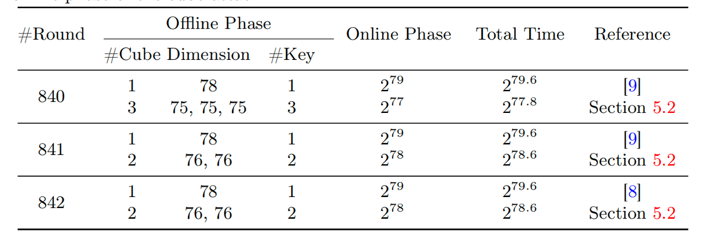
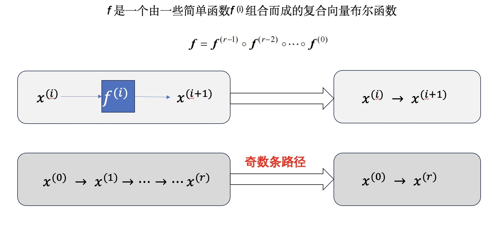

An Algebraic Formulation of the Division Property:Revisiting Degree Evaluations, Cube Attacks, and Key-Independent Sums
胡凯等人发表在亚密会2020: 原文
motivation
- 2017年，Todo等人将可分性引入到立方攻击中，用于恢复超多项式
- 可分性是通过多重集定义的
- 如何用密码代数结构本身定义？
- 作者发现：f是复合而成的，具有一些代数结构
研究意义及贡献
单项式传播理论：
- 基于郝泳霖等人提出的无未知子集的三子集可分性理论
- 另一种从代数角度的不借助其他概念的可分性的解释
单项式预测技术：
- 可以计算Trivium在1-834轮的精确代数次数
- 改进了840、841和842轮Trivium的攻击结果

主要想法

单项式传播理论：
- 将单项式的存在性与单项式路径数量的奇偶性建立了联系
- 将自动化模型中的一个解对应一条单项式路径。
单项式预测技术：
计算单项式路径的个数 $\to$ 该单项式是否存在于超多项式中
总结
2017年，可分性被Todo等人引入到cube攻击中，用来尝试恢复超多项式。可分性在前人论文中是通过多重集定义的，而不是用其自身的内在属性定义的。所以本文中作者将郝泳霖等人提出的无未知子集的三子集可分性理论，从密码代数结构的角度解释为单项式传播理论。该理论中作者将单项式的存在性与单项式路径数量的奇偶性建立了联系，将自动化模型中的一个解对应为一条单项式路径。基于此，作者提出了单项式预测技术，通过计算单项式路径的个数来确定该单项式是否存在于超多项式中，从而可以准确计算超多项式的代数标准型。利用该技术，作者可以计算1-834轮Trivium的精确代数次数，改进了840、841和842轮Trivium的攻击结果。由本文可知，对于恢复超多项式而言，作者发现真正有意义的是出现奇数次的单项式路径。如果未来能够提前识别并去除出现偶数次的单项式路径，将显著降低MILP模型的求解负担。
上述内容仅用于非领域人员快速了解，具体实现逻辑及细节不做展示
Welcome to MinZhang’s space! If you have any questions about the following issues, you can contact me on GitHub or email- zhangmin2022@iie.ac.cn.